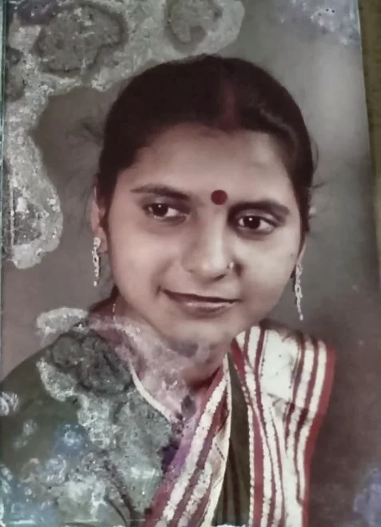
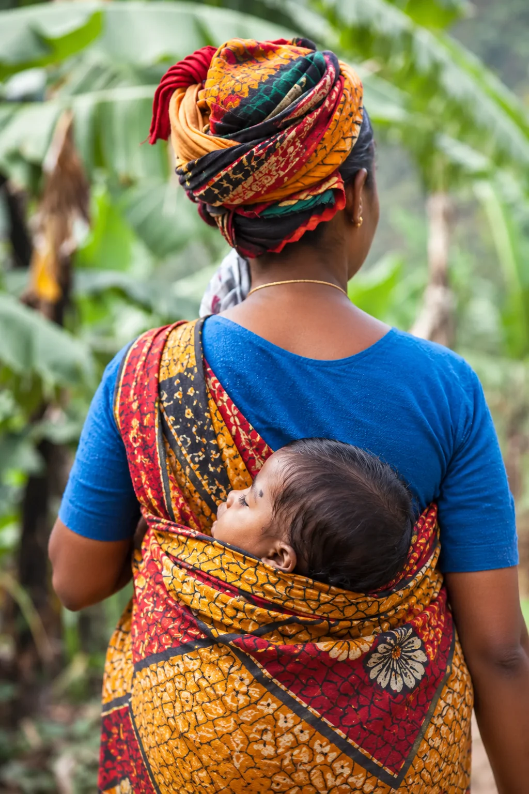
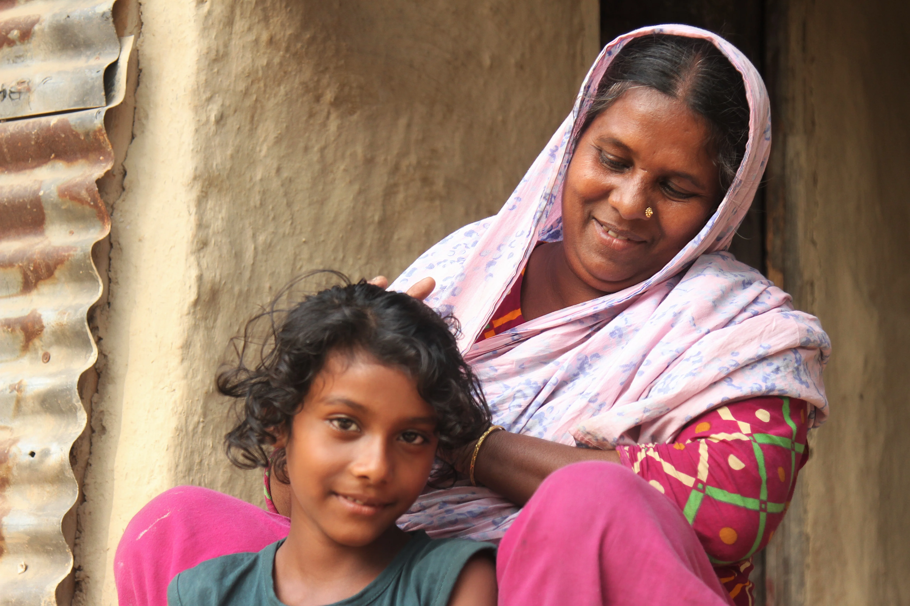
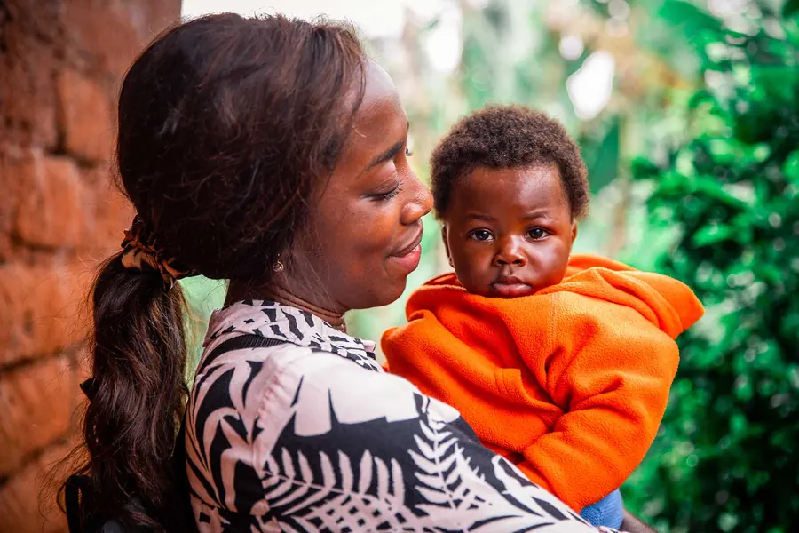
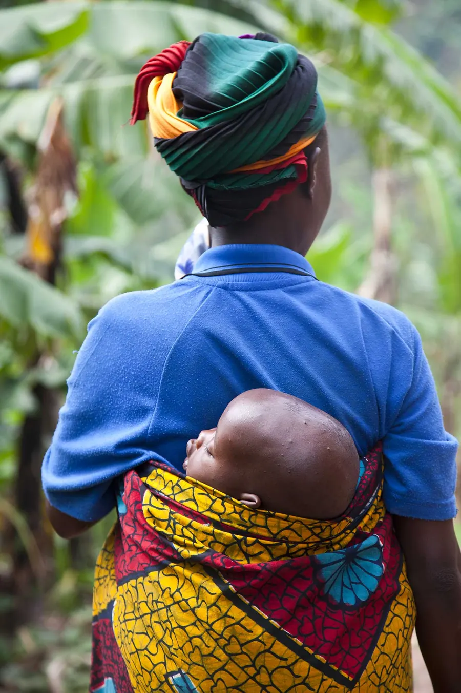

Helping Those in Need
When someone is struggling, timely help makes all the difference. We provide food, care and essential support to families and individuals who need it most.
Donate NowKindness, Compassion and Care for Others

In Loving Memory
An enduring light of love, compassion and kindness.
Some people leave behind memories that remain close to our hearts. Others leave behind values that continue to inspire long after they are gone. Sarita Chachan was one such person.
A woman of immense empathy and generosity, Sarita Chachan had a natural inclination to care for others. Her compassion extended far beyond her immediate family and friends. She believed in being there for people, understanding their struggles and offering help whenever she could. Whether through a thoughtful gesture, a reassuring word or going the extra mile for someone in need, she made a difference in the lives of those around her.
She never needed a reason to be kind, nor did she expect anything in return. Her willingness to help was an expression of who she was. To those who knew her, she was a source of warmth, comfort and reassurance, a ray of hope in moments when it mattered most.
Her greatest contribution was perhaps not measured in material things, but in the relationships she nurtured, the support she extended and the goodness she inspired in others. She touched lives in ways that may never be fully known, leaving behind a legacy rooted in humanity and selflessness.
For her family, her values remain a guiding force and a reminder that the most meaningful lives are those that make a difference to others.
Though her physical presence is deeply missed, her spirit continues to live on through the people she loved, the lives she touched and the kindness she inspired.

When someone is struggling, timely help makes all the difference. We provide food, care and essential support to families and individuals who need it most.
Donate Now

Beyond immediate help, we support programs that create lasting change. Through education, skills training and opportunity, we help people build a better future.
Contact UsStories of Kindness
Explore stories of compassion and care from the people and communities we serve. From heartfelt messages to memorable events, see how your kindness is bringing hope every day.
Our Purpose
We believe that a child's circumstances should never determine the boundaries of their future. Across communities, many children face barriers to quality education, essential healthcare and the opportunities they need to thrive. SARINI MEMORIAL FOUNDATION aspires to address these challenges by supporting children from underprivileged backgrounds and helping them build a foundation for a healthier, more empowered future. Inspired by Sarita Chachan's compassion and belief in helping others, our purpose is to create opportunities that make a meaningful and lasting difference in the lives of children.
More InfoA world where every child, irrespective of their socioeconomic background, has access to education, healthcare and the opportunity to live a life of dignity, fulfilment and hope.
To honour the legacy of Sarita Chachan by empowering underprivileged children through educational support and access to healthcare, while fostering a culture of empathy, generosity and social responsibility.
The Legacy Continues
The foundation is a shared commitment by her sons, Ripunjay and Sourath, to honour their mother’s life by extending the compassion she embodied to children and families in need.
What began as a deeply personal desire to preserve her memory is now taking the shape of a purpose-driven initiative, rooted in the belief that her values can continue to make a difference in the world.


